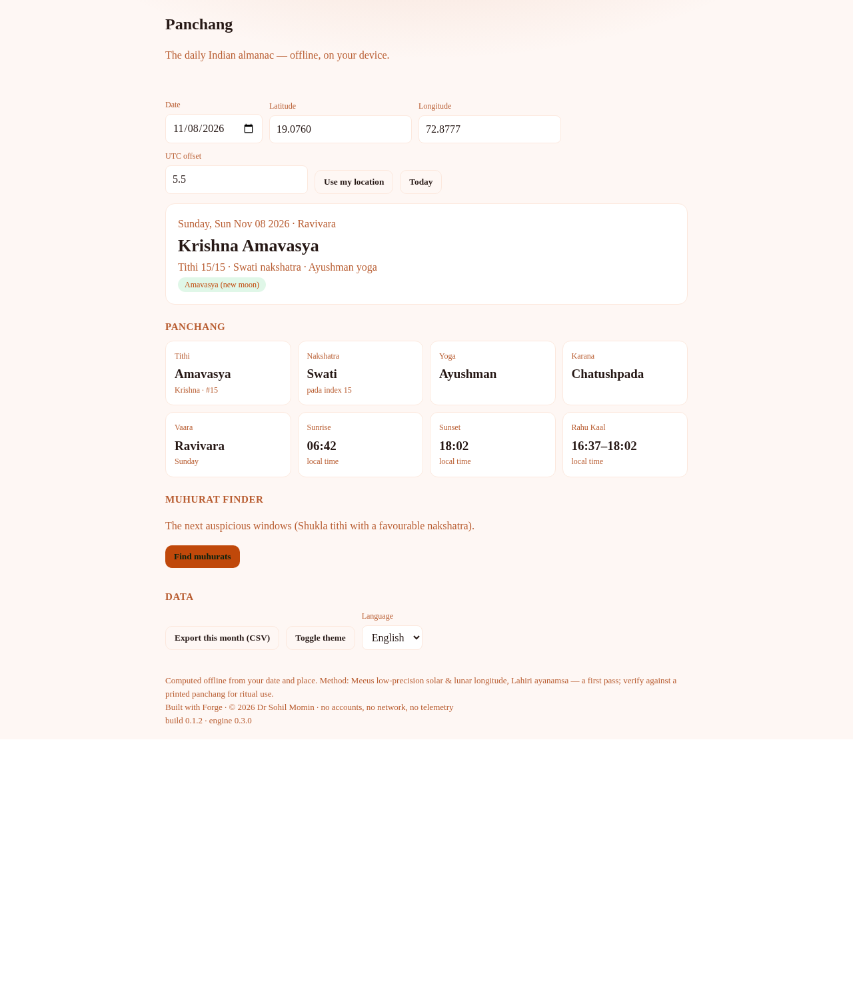

01
The five limbs
Tithi and its paksha, nakshatra, yoga, karana and vaara — the classical panchanga, taken from the moon–sun elongation and a Lahiri ayanamsa rather than from a table of dates.
daily almanac · offline
Tithi, nakshatra, yoga, karana, vaara, sunrise and sunset, the Rahu Kaal window, and the next auspicious muhurats — calculated from the date and your place, with no network at any point.
the demo is the app
This frame runs docs/play/ straight from the repository. Pick a day below and the frame moves to it; every number you see is calculated in your browser.
Jump to

five limbs and the times that matter
01
Tithi and its paksha, nakshatra, yoga, karana and vaara — the classical panchanga, taken from the moon–sun elongation and a Lahiri ayanamsa rather than from a table of dates.
02
Sunrise and sunset from the standard sunrise equation, and Rahu Kaal measured as the weekday’s eighth of the real sunrise-to-sunset day — not the fixed 6-to-6 tables, which drift an hour out at the solstices.
03
The muhurat finder scans sixty days for a favourable tithi with a favourable nakshatra; the whole month exports to CSV. Both work with the network switched off.
what it refuses to do
method
The engine is docs/play/panchang.js — about three hundred lines, astronomy and almanac in one self-contained file, that compute the day rather than recite it.
test-node.js checks six elongations, the March equinox, Mumbai’s sunrise and sunset, Holi and Diwali, the karana table’s wrap-around, and the muhurat finder.Read this before you rely on it. Lunar longitude from a reduced series puts a tithi or nakshatra boundary within a few minutes of time, and local tradition differs on ayanamsa and on where a day begins. Use it to plan, not to settle a dispute; verify against a printed panchang for your city.
run it
# the whole app, no install open docs/play/index.html # the engine's tests node test-node.js 37 passed, 0 failed
Works from file://, from a local server, and from GitHub Pages. No build step, no bundler, no package install.